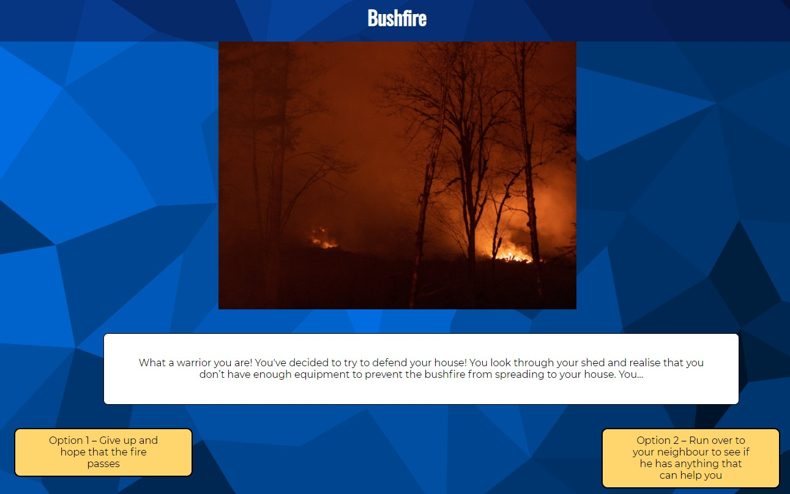
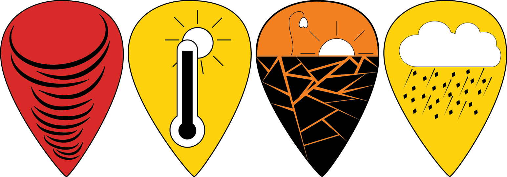

I am currently studying a Bachelor of Information Technology at UQ, which I started in 2020 and intend to finish in 2022. My main interests in the field are around programming and coding, with much more interest in the technical side than in design. I intend on completing a dual major with Software Design and either Computer Systems and Networks or Software Information Systems, showcasing the fields that I find far more interesting and engaging.
My name is Lucas Bouwman and I am a Student
During the 'Design Exploration' phase, I The Idea
The idea we went for with our major project was something I came up with during the ‘Design Exploration’ phase. The general premise is to educate and entertain users, later defined to be school students, with the various disasters that have occurred in Australia over the last 170 odd years. We would parse the information from data.gov into pins that we could place on a map of Australia in relation to their real-life location, giving the user the ability to explore the diverse landscape of disasters. They would then be able to interact with the pins to learn both historical information about that specific disaster as well as general safety information for that type of disaster. This gave us both breadth and depth for our design, as we ultimately limited it down to exclusively natural disasters and still there were hundreds of entries that we made use of. With some additional tweaks and additions, we knew we had an idea that would work.
For Part A, I Described The Design Concept
One of my main tasks during the Part A: Design Concept Proposal was to explain the concept of our project. It was decided that it would be best for me to complete this specific task as I was both the team lead and the progenitor of the idea. This proved vital, as I was able to use the design concept to set the expectations and project orientation for the rest of the document and project as a whole. With the importance of this in mind, I worked closely with my fellow team mates to develop and agree on the specific purpose of the design.
We collectively decided that our project should be engaging and interactive, yet still remain primarily an educational tool for school students, with a modern and professional aesthetic to appeal to a large and diversified audience. The idea was for the main component of the project, the interactive map, to be as approachable to all audiences, with the secondary component of the narrative minigame being specifically designed for school students. We saw these union of ideas as a way to both satisfy the given design brief and create an effective design that could realistically see use.
For Part B, I Engineered The Database
For Part B, I ended up having to figure out most of the stuff for the secondary database we implemented through PhpMyAdmin. While originally designated to Caleb, we ran into unforeseen complications when connecting to the database. Instead, Caleb moved on to alternate tasks and I shifted focus to get the database up and running for the MVP, as we were quickly running out of time until we had to give our progress presentation. With this deadline in mind, I set to work, showing determination and focus in my task. Firstly, I had to create the database and table within PhpMyAdmin and prepare it for the supplementary safety information Caleb and I had already written up earlier, which I had to do extensive research for. Once this was completed, I moved on to connecting to the database in our php file, which is where we ran into trouble. Firstly, there was an issue within our team zone that we were initially unaware of that was preventing the connection, ultimately requiring extension communication with our tutors. During this stage, we were unable to attempt to connect to the database while time continued to tick, bringing us ever closer to the deadline.
Once the tutors determined the issue and fixed our zone, I immediately went back to figuring out how to connect to our secondary database. After numerous unsuccessful attempts and extensive research, I finally resolved how to connect to our database and then had to figure out how to properly parse our information. Originally, we intended to use a variable parsed through JavaScript to create the MySQL query to return the necessary information but we found we were unable to do this due to the order in which the code is compiled, as our php file would be unable to access the JavaScript file. With time short, I devised a quick stop-gag solution to this issue, instead parsing our secondary database table into an array of arrays, with each nested array being the row of values from the table. With the full array returned and parsed into our JavaScript file, we were then able to navigate through it and make use of our variable to determine which nested array to use, with innerHTML elements then used to insert the necessary text. While I didn’t particularly like this method, as I found it redundant and inefficient to call and return the entire table each time the page was entered, we kept it for the MVP.
For the final implementation in Part C, I Coded The 'Adventure' Game
 While the ‘Choose Your Own Adventure’ game wasn’t originally my idea and I didn’t write any of the stories for it, I did ultimately get the technical implementation and structure of it working. Honestly, I was looking forward to attempting it, as I enjoy the sort of problem solving needed for these scenario’s and, with my great deal of expertise and experience in gaming as a whole, felt more than prepared to give it a go. Indeed, while my prior knowledge did come in handy when doing the initial structural design, the biggest issue I ran into was, quite simply, time management. We didn’t get around to the game until very late in the development on account of how long it took to write up the individual story scenario’s, giving me less than a week to get it all sorted and working. Due to this, I had to cut corners where I could and resorted to design choices that, given additional time, I would much rather have redesigned.
The most noteworthy was how the game scored the user, as instead of implementing a system to check the answer, I had to resort to structuring all the games so the second choice (right-hand side) was the only correct answer. This forced constraints on how we designed the stories, but this had little affect as the stories were already being reduced in size and quality compared to what we originally had envisioned. This was one of the troubles we had with implementing a unique scenario for each disaster type, as we had to distribute our time across the 8 categories we had. Whatever quality of story we created for one disaster, we would have to recreate it for the other 7 disasters in order to have everything be of similar quality. While I’m still happy with how it turned out, I know it could have been much more in-depth and of higher quality if given more time.
After the semester, I have reflected on My Expectations
Looking back at my original expectations for this course, I can see that it mostly met my expectations. However, there are still a number of expectations I had that didn’t quite pan out exactly as I had thought. Namely, I assumed that the course would run similar to DECO1100, with the team’s conducting various group activities through the contacts. While this was true for a time, the contacts quickly morphed into a time to work on the project, collaborate with teammates and discuss with tutors. In hindsight I can understand why, as this course is very much orientated to putting a great deal of effort into a single piece instead of multiple quick and short pieces like how DECO1100 partly was, as we instead have our singular major project. In regards to the similarity to DECO1400, with the addendum of additional database languages like Php and SQL, my expectations were fairly accurate there, as this course dealt with both the web-based development and thorough report writing of 1400.
Interesting enough, one of my major concerns in my original expectations was how working with teams would go, as before this course I had little experience in the matter. Now, after spending the semester as team lead and heading the major project development, I realise that I unconsciously took a proactive approach to this issue by becoming the leader and organising the team together. I expected the worst but, instead of leaving it to chance as to how the team functioned, I metaphorically took the reigns and used my own organisational and strategical thinking to ensure the group worked cooperatively, constructively and efficiently. While I’m sure our team would have faired fine with any of the other members as lead, I think that my coordination, determination and ambition greatly helped in creating a project that every member of the team could be proud of.
Sure enough, when discussing how the tradeshow, the only member of the team that showed any hint of doubt was, in fact, myself. However, I feel this would have been true regardless as to what quality our final project ended up being, as I expected this due to how I naturally doubt my work in an effort to self-improve, regardless of how practical that may be or if the assignment is already handed in. And sure enough, my expectation of driven self-motivated learning came to fruition in my time as team lead, as the tasks I found myself constantly completing for the project were those that other teammates had unsuccessfully attempted. These required me to step in and put in the effort and focus to research, devise and develop a solution, requiring extensive problem solving and technical understanding.
This website is my personal portfolio.
This portfolio website was completed for the DECO1800 course reflection and primarily utilises the skills and content I gained from that course. One of the biggest considerations I had when creating this portfolio was the use of JavaScript and CSS. For me, JavaScript is my favourite part of web development and is where I am most confident, so I wanted to try and reflect this in my design. To that end, I created several different functions to accomplish things myself and changed the overall structure of my website to make more obvious use of JavaScript, particularly with the use of buttons to change the textual elements. While I am uncertain how these components work from a stylistic and design perspective, I still wanted to make use of them to show my proficiency and passion for JavaScript. I also made use of a some third-party javascript code, modified to suit my needs, to spice up the landing page and image interaction. I've referrenced these below. However, I did not enjoy the CSS styling of the portfolio. While I don’t lack the skills to style or write CSS, I personally find the process of doing so incredibly frustrating, slow and painful. I’d much rather spend several hours creating a difficult JavaScript function than styling and positioning the elements on webpage, as I much prefer the small amount of difficult tasks associated with coding than the bunch of relatively menial and boring aspects of web styling.
References Include:
Magnific Popups by Dmitry Semenov for the sleek image zoom: http://dimsemenov.com/plugins/magnific-popup/
GreenSock GSAP animation library: https://greensock.com/gsap/
Demo 3 by Rachel Smith from CoDrops Animated Background Headers for the landing screen background animation: https://tympanus.net/Development/AnimatedHeaderBackgrounds/index3.html
jQuery JavaScript Library: https://jquery.com/